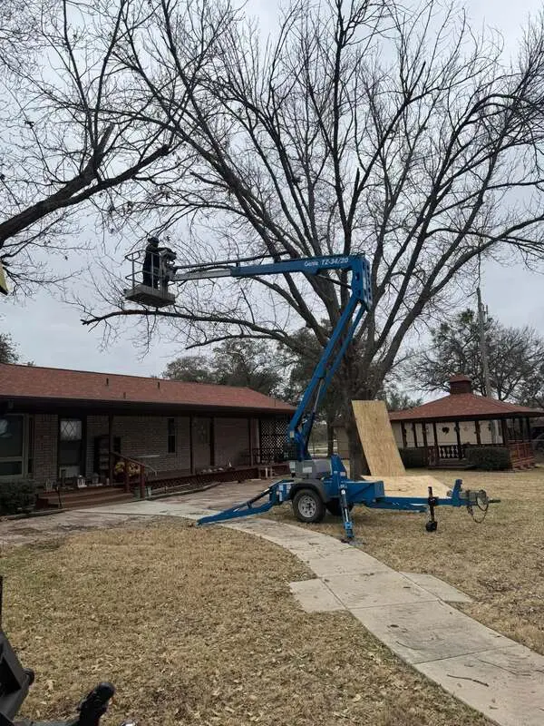

Serving Lake Brownwood
Tree work planned for lake-property terrain.
Removal, trimming and cleanup around lake homes, slopes, roofs, drives and limited-access areas.

Access is part of the plan
Lake properties can involve steep ground, narrow drives, retaining walls and trees positioned between a home and the water. Photos help Saul evaluate not only the tree but also how climbers, lifts and cleanup equipment may reach it.
Send the wider view
Include the tree, its base, the house or dock nearby and the route from the road. That context makes the first conversation more useful and reduces unnecessary back-and-forth.